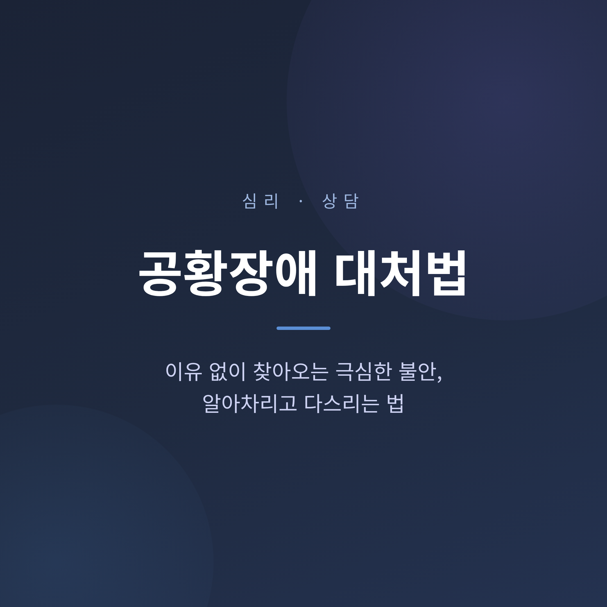
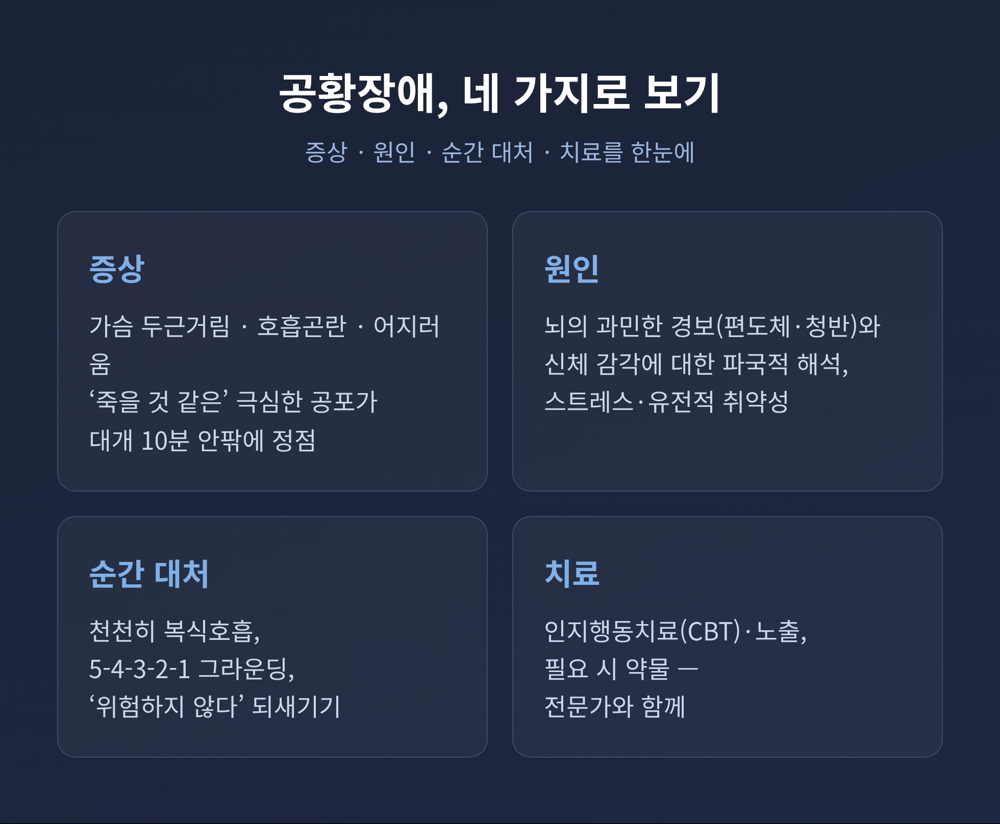
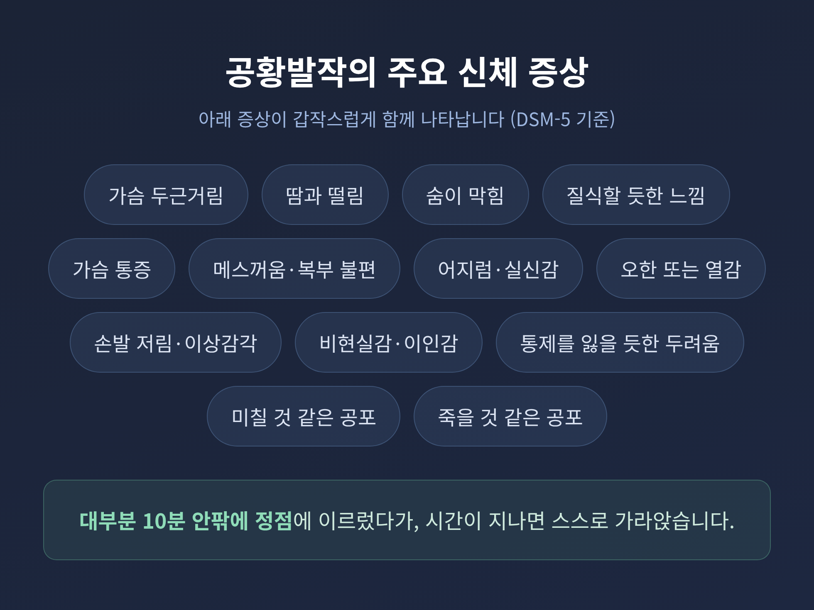
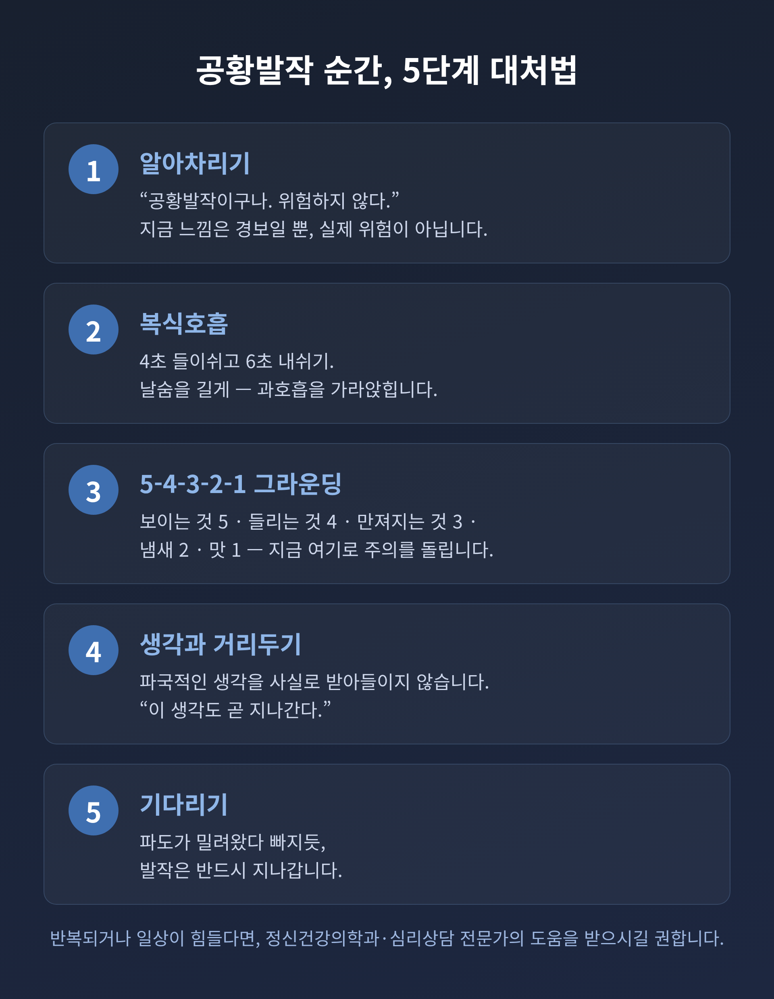

[상담] 공황장애 대처법 — 이유 없이 찾아오는 극심한 불안, 알아차리는 법

공황장애는 특별한 이유 없이 극심한 불안이 갑자기 밀려오는 질환입니다. 이 글에서는 공황발작의 증상과 원인, 발작 순간의 대처법, 그리고 근거 기반 치료까지 차분히 정리해 보겠습니다.
먼저 핵심부터 말씀드립니다. 공황발작은 강렬하지만 대개 몇 분 안에 가라앉으며, 위험한 상태가 아닙니다. 공황장애는 치료 효과가 좋은 편이고, 적절히 치료하면 대부분 호전됩니다.

이 글은 일반적·교육적 정보를 제공할 뿐, 의학적 진단이나 치료를 대신하지 않습니다. 증상이 반복되거나 일상에 지장이 있다면 정신건강의학과 전문의나 임상심리 전문가와 상담하시길 권합니다.
공황발작은 어떤 모습으로 찾아오나
공황발작은 외부에 실제 위협이 없는데도 극심한 불안과 함께 여러 신체 증상이 한꺼번에 나타나는 상태입니다.
가슴이 두근거리고, 숨이 가빠지고, 어지럽습니다. 땀이 나고 몸이 떨립니다. "이대로 죽을 것 같다"는 공포가 밀려오기도 합니다.
증상은 갑자기 시작되어 보통 10분 이내에 최고조에 이릅니다. 스트레스 상황뿐 아니라 수면 중이나 길을 걷는 중처럼 전혀 예기치 못한 순간에도 나타날 수 있습니다.
응급실을 찾을 만큼 강렬한 것이 사실입니다. 그러나 대개 별다른 처치 없이 자연히 가라앉습니다.
DSM-5 기준으로는 아래 13가지 증상 가운데 4가지 이상이 갑자기 나타날 때 공황발작으로 봅니다.
- 가슴 두근거림 또는 심장박동 증가
- 땀이 남
- 몸이 떨리거나 후들거림
- 숨이 가쁘거나 답답한 느낌
- 질식할 것 같은 느낌
- 흉통 또는 가슴 불편감
- 메스꺼움 또는 복부 불편감
- 어지럽거나 쓰러질 것 같은 느낌
- 오한 또는 열감
- 감각이 둔해지거나 따끔거림
- 자신·주변이 낯설게 느껴짐(비현실감)
- 통제력을 잃거나 미칠 것 같은 두려움
- 죽을 것 같은 공포

발작 한 번이 곧 공황장애는 아닙니다
여기서 한 가지를 구분해야 합니다. 공황발작을 한 번 경험했다고 해서 곧바로 공황장애인 것은 아닙니다.
발작이 반복되고, 또 발작이 올까 봐 한 달 이상 지속적으로 걱정하거나(예기 불안), 발작 때문에 특정 행동을 회피하고 바꾸는 양상이 동반될 때 공황장애로 진단합니다.
평생 공황발작을 한 번쯤 경험하는 사람은 대략 열 명 중 한 명꼴로 알려져 있습니다. 드문 일이 아닌 셈입니다.
왜 이유 없이 찾아오는가
공황장애는 단일 원인으로 생기지 않습니다. 생물학적 취약성에 심리·환경적 스트레스가 더해져 나타나는 것으로 봅니다.
생물학적으로는 세로토닌, 노르에피네프린, 가바 같은 신경전달물질의 불균형이 관련됩니다. 뇌간의 청반핵에서 노르에피네프린이 갑자기 치솟으면 공황이 유발될 수 있습니다. 공포 반응을 담당하는 편도체 등 공포 회로가 과민해진다는 보고도 있습니다.
여기에 스트레스가 방아쇠 역할을 합니다. 첫 발작 전에는 정신적 스트레스나 육체적 피로가 누적된 경우가 많습니다. 이별, 대인관계 갈등, 질병, 과도한 책임감처럼 심한 스트레스가 앞서는 일이 흔합니다.
문제를 키우는 것은 '파국적 해석'입니다. 두근거리는 신체 감각을 "심장마비"나 "죽음"으로 받아들이면, 그 두려움이 다시 신체 증상을 키웁니다. 불안이 증상을 부르고 증상이 다시 불안을 부르는 악순환입니다. 이 고리를 끊는 것이 치료의 핵심 표적입니다.
발작이 시작됐을 때, 이렇게 합니다
발작이 닥쳤을 때 통제감을 되찾는 데 도움이 되는 방법들이 있습니다. 다만 이는 임시 대처법이며, 근본 치료를 대신하지 않습니다.
첫째, 복식호흡. 가슴이 아니라 배를 부풀리며 호흡합니다. 들숨에 배가 풍선처럼 부풀고, 날숨에 줄어든다고 상상합니다. 코로 들이쉬고 입으로 내쉬되, 날숨을 들숨보다 몇 초 더 길게 합니다. 과호흡을 줄이고 신체 각성을 낮추는 원리입니다.
둘째, 5-4-3-2-1 그라운딩. 현재의 감각에 주의를 옮기는 방법입니다. 보이는 것 5가지, 만질 수 있는 것 4가지, 들리는 것 3가지, 냄새 2가지, 맛 1가지를 천천히 찾아봅니다. 오감에 차례로 집중하면 불안한 생각에서 주의가 분산됩니다.
셋째, 스스로 상기하기. "이것은 공황발작이고, 위험하지 않으며, 몇 분 안에 지나간다"고 되뇝니다. 차가운 물을 한 모금 마시거나 안전한 자세로 앉는 단순한 행동도 통제감을 되찾는 데 도움이 됩니다.
곁에 있는 사람이라면, 차분한 목소리로 안심시키고 함께 천천히 호흡하도록 도와주시면 좋겠습니다. "정신 차려" 식의 다그침은 피하는 편이 낫습니다.

근거 기반 치료는 분명히 있습니다
다행히 공황장애는 치료 효과가 좋은 편입니다. 적절히 치료하면 대부분 호전됩니다.
가장 잘 연구된 1차 치료는 인지행동치료(CBT)입니다. 신체 증상에 대한 파국적 사고 패턴을 인식하고 교정하는 것이 핵심입니다. 호흡 재훈련, 근육 이완, 노출이 주요 구성 요소이며, 심리치료는 효과가 오래 지속된다는 근거가 보고됩니다.
노출치료는 공황을 유발하는 상황과 신체 감각에 점진적으로 노출시켜 두려움을 줄입니다. 회피 행동을 줄여 광장공포증으로 번지는 것을 막는 데 중요합니다.
약물치료에서는 SSRI 계열 항우울제가 대표적인 1차 약물입니다. 벤조디아제핀 계열 항불안제는 급성 증상에 빠르게 작용하지만 의존 위험이 있어, 단기·보조적으로 신중히 씁니다. 약물은 보통 8~12개월 유지가 권고되며, 임의로 중단하면 재발 위험이 있습니다.
여기서 한 가지는 분명히 짚어 둡니다. 약은 반드시 전문의의 처방과 지도하에 써야 합니다. 자가 복용이나 임의 증량·중단은 위험합니다. CBT와 약물을 병행하면 각각 단독 치료보다 효과적이라는 보고도 있습니다.
일상에서 다지는 것들
근본 치료와 함께 생활습관을 다지면 증상 안정과 재발 방지에 도움이 됩니다.
- 카페인·술·담배 줄이기. 카페인은 각성을 일으켜 공포 감각을 예민하게 만듭니다. 술·담배는 증상을 달래기는커녕 악화시키기 쉽습니다.
- 규칙적인 운동. 가벼운 산책, 스트레칭, 요가, 명상 같은 이완 활동을 꾸준히 하면 부정적 생각이 줄어듭니다.
- 규칙적인 수면. 수면·기상·식사 시간을 일정하게 유지합니다. 리듬이 무너지면 악화를 호소하는 경우가 많습니다.
예전에는 증상을 억누르려 술이나 커피로 버티는 분이 적지 않았습니다. 지금은 그 방식이 오히려 적이라는 사실이 강조됩니다. 컨디션이 안정되면 같은 불안에도 한결 의연하게 대처할 수 있습니다.
언제 전문가를 찾아야 하나
다음과 같은 신호가 있다면 전문가의 도움을 받으시길 권합니다.
공황발작이 반복되거나, 또 올까 봐 두려워 특정 장소·상황을 회피하기 시작할 때. 일상생활이나 직장, 학업에 지장이 생길 때입니다. 치료가 늦으면 직장을 포기할 만큼 악화되기도 합니다.
가슴 통증이나 호흡곤란으로 심장 문제를 의심해 응급실을 찾는 경우도 많습니다. 처음에는 심장·폐 질환을 배제하는 검사가 필요할 수 있습니다. 검사에 이상이 없는데 발작이 반복된다면, 정신건강의학과 평가로 이어져야 합니다.
자가진단 체크리스트는 참고용일 뿐 확진 도구가 아닙니다. 결과와 무관하게 증상이 지속되면 전문가 상담을 권합니다.
혹시 극단적인 생각이 들거나 위급할 때는 정신건강 위기상담전화(1577-0199)나 자살예방상담전화(109)로 도움을 받을 수 있습니다.
정리하면 이렇습니다.
공황발작은 강렬하지만 위험하지 않고, 공황장애는 치료로 충분히 나아질 수 있는 질환입니다. 핵심은 증상을 파국으로 해석하지 않고, 알아차리고, 제때 도움을 청하는 것입니다.
"이것은 지나가는 발작이며, 나는 안전하다."
이 한 문장을 기억할 수 있다면, 다음 불안의 파도는 조금 덜 두렵게 지나갈 것입니다.